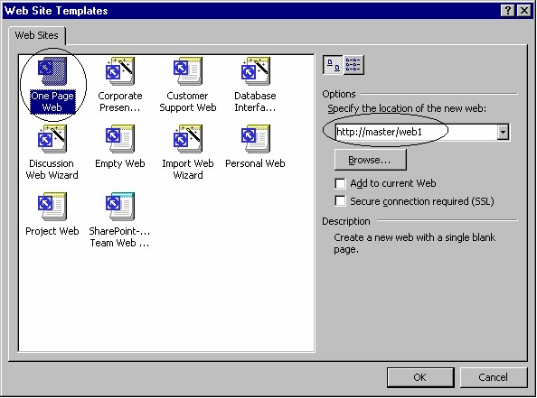

4 Membangun situs dengan Frontpage XP
Ada dua langkah yang harus Anda perhatikan, pertama Anda harus memiliki lokasi
hosting dan yang kedua Anda harus bisa membuat situs Anda sendiri.
Langkah pertama, Anda tinggal menyiapkan dana secukupnya kemudian hubungilah
ISP (Internet Service Provider) yang baik di kota Anda. Daftarkan diri Anda, Anda
akan memperoleh account sendiri dan alamat hosting berupa URL.
Setelah memiliki lokasi hosting, yaitu telah mendapatkan account dari ISP dan diberi
URL, maka Anda bisa membuat dan mem-publish situs Anda ke internet. Gunakan
Frontpage XP, mudah sekali dan hasilnya sangat mengesankan.
Sebelum hosting ke provider (ISP), Anda bisa hosting di komputer Anda sendiri,
yang kini sudah merupakan web server.
Pilihan lainnya jika komputer Anda bukan web server adalah disk based, yaitu Anda
bisa menggunakan komputer Anda untuk menyimpan situs yang Anda bangun
seperti biasa dan mencobanya dengan FrontPage XP. Kelak jika sudah selesai, Anda
bisa menyerahkan situs tersebut ke Isp untuk dipublish ke Internet.
Pembahasan berikutnya adalah selayang pandang membangun situs dengan
FrontPage XP. Dilakukan pada komputer Anda sendiri yang telah memiliki web
server bernama master.
4.1 Membuat home page
Tahap pertama membuat situs adalah membuat home page. Dan langkah yang
diperlukan adalah:
1. Jalankan Microsoft FrontPage XP.
Gambar 2.12 Tampilan Microsoft FrontPage XP
2. Dari menu File arahkan ke New, lalu klik Page or Web. Muncul Task Pane
dengan tema New Page or Web.
Gambar 2.13 Task Pane baru
3. Pada task pane, di bawah kelompok New from Template, klik icon Web
Site Templates. Lihat Gambar 2.13. Muncul kotak dialog Web Site
Templates (lihat Gambar 2.14).

Gambar 2.14 Kotak dialog Web Site Templates
4. Klik icon One Page Web, lalu pada kotak isian Specify the location of the
new web, tuliskan URL web site Anda yang diberikan oleh ISP. Dalam
contoh ini penulis menggunakan server sendiri bernama master¸ dan
publikasinya bukan ke Internet namun ke Intranet kantor dengan folder
web1, jadi URL penulis adalah http://master/web1. Kemudian klik OK.
FrontPage XP akan membuat sebuah web site pada server, yaitu komputer
Anda sendiri yang bernama master. Hasilnya berupa suatu situs dengan
sebuah halaman kosong seperti Gambar 2.15.
Gambar 2.15 Situs dengan satu halaman kosong
5. Jika belum tampak halaman putih di bidang sebelah kanan, pada Folder List
klik ganda icon Default.htm.
6. Kemudian tuliskan kalimat: “Selamat Datang di Web Site pertama saya”.
Gambar 2.16 Kalimat baru
7. Pada toolbar klik tombol Save, atau aktifkan File _ Save.
8. Kemudian klik Preview in Browser, atau aktifkan File _ Preview in
Browser. Browser akan diaktifkan dan menampilkan halaman Anda,
hasilnya seperti Gambar 2.17.
Gambar 2.17 Situs tampak di browser
9. Tutuplah browser dan kembali ke FrontPage XP, selanjutnya Anda bisa
menambahkan kalimat Anda sendiri.
10. Gunakan tombol-tombol yang ada di toolbar Formatting untuk mengatur
format teks agar lebih menarik.
4.2 Membuat halaman lain
Home page adalah halaman awal yang akan dibuka ketika seseorang mengunjungi
situs web kita. Selanjutnya dari Home Page bisa dibuka halaman-halaman lainnya.
Berikiut ini langkab pembuatan halaman lainnya
1. Di bidang sebelah kiri klik icon Navigation, FrontPage XP mengubah tampilan
menjadi Navigation View. Gambar 2.18. Perhatikan, pada tampilan tersebut
hanya terdapat sebuah icon halaman, yaitu halaman Home Page.
Gambar 2.18 Tampilan Navigation View
2. Klik kanan icon halaman Home Page, lalu aktifkan perintah New è Page.
Terbentuk sebuah halaman kosong baru.
3. Klik judul halaman tersebut lalu tuliskan Anak_1. Lihat Gambar 2.19.
Gambar 2.19 Halaman baru (Anak_1)
4. Ulangi langkah di atas untuk membuat halaman baru bernama Anak_2. Lihat
Gambar 2.20.
Gambar 2.20 Kotak dialog Save As
5. Pada halaman Anak_1 buatlah halaman Cucu_1, Cucu_2, dan Cucu_3.
Kemudian buatlah halaman baru Cucu_4, Cucu_5, dan Cucu_6 pada halaman
Anak_2. Lihat Gambar 2.21.
Gambar 2.21 Kata pembuka link
4.3 Membuat bidang umum
Masih ingat tentang Navigator atau Libk Bar Horisontal? Nah, untuk memasang
navigator perlu disediakan ruangan khusus yang akan muncul di setiap halaman.
Ruangan untuk navigator terletak di atas (Top). Sarana pembuat top adalah Shared
borders.
Tidak hanya Top yang bisa dihasilkan oleh Shared borders, namun juga Left yang
berguna untuk membuat Link bar vertikal di sebelah kiri halaman. Juga tersedia
Bottom untuk membuat ruang di bagian bawah.
Cara pemakaian Shared borders adalah:
1. Klik icon Default.htm (Home Page).
2. Aktifkan perintah Format è Shared Borders. Muncul kotak dialog Shared
Borders.
Gambar 2.22 Kotak dialog Insert Hyperlink
3. Klik pilihan All pages.
4. Klik Pilihan Top, Left dan Bottom. Pada Top, aktifkan juga pilihan Include
navigation buttons . Lihat Gambar 2.23.
Gambar 2. 23 Pilihan Top, Left dan Bottom
5. Klik OK. Untuk melihat hasilnya pada halaman, klik icon Page pada bidang
kiri untuk berpindah ke tampilan halaman.
Gambar 2.24 Shared borders terpasang
4.4 Memasang tema
Anda bisa menambahkan hiasan grafis yang meliputi latar belakang, tombol,
navigasi dan sebagainya untuk situs Anda. Hiasan ini dinamakan tema atau theme,
yang akan muncul secara seragam di seluruh halaman web.
Cara pemasangan theme adalah:
1. Aktifkan Format è Themes. Muncul kotak dialog Themes.
Gambar 2.25 Kotak dialog Themes
2. Klik pilihan All pages, lalu pilihlah salah satu tema pada daftar yang disediakan
di sebelah kiri. Misalnya Capsules. Gambar 2.26.
Gambar 2.26 Pilihan tema Capsules
3. Klik OK, tema akan diterapkan ke situs Anda. Hasilnya seperti Gambar 2.27.
Gambar 2.27 Situs dengan tema Bubbles
4. Selanjutnya Anda bisa mencobanya di browser dengan cara klik tombol Preview
inbrowser. Nah, kini situs Anda lebih menarik.
5. Untuk mengganti tema, aktifkan lagi Format è Themes dan pilihlah tema
baru. Masih banyak tersedia tema yang indah dan menarik.
4.5 Menambah Link bar
Kita sekarang memiliki sembilan halaman pada situs, kini saatnya untuk saling
merangkai halaman tersebut.
Anda bisa memasang link bar atau navigatir dengan mudah, caranya:
1. Klik kanan teks [Edit the propertiesfor this link bar….
2. Klik perintah Link Bar Properties. Muncul kotak dialog Link Bar Properties.
Gambar 2.28.
Gambar 2.28 Kotak dialog Link Bar Properties.
3. Pastikan pilihan Child level dalam keadaan terpilih. Klik OK, hasilnya seperti
Gambar 2.29 berikut ini:
Gambar 2.29 Link bar dua tombol
Perhatikan bahwa, pilihan Child level akan menyebabkan tombol menampilkan
nama Anak_1 dan Anak_2, sebab keduanya merupakan anak dari halaman Home
Page. Marilah kita coba Navigator kita ini. Klik tombol Preview in Browser.
Gambar 2.30 Halaman Default
Kalau Anda klik tombol Anak_1 atau Anak_2, hasilnya akan seperti Gmbar 2.31
berikut ini:
Perhatikan bahwa, selru ruh halaman menampilkan unsur grafis yang sama persis,
mulai dari gambar latar belakang, gambar tombol, jenis/ukuran font dan sebagainya.
Hal ini adalah hasil kerja FrontPage XP dalam menerapkan tema (theme) yang kita
pilih. Kemudian FrontPage XP juga bekerja membuat sambungan antar halaman
secara otomatis, sesuai hirarki yang telah kita tentukan pada tampilan navigation
(pada waktu membuat halaman-halaman).
4.6 Membuat daftar isi
Kita masih memiliki ruang Left yang belum kita manfaatkan. Mari kita gunakan
untuk membuat daftar isi, dengan langkah:
1. Klik Left.
2. Aktifkan Insert è Web Component. Muncul kotak dialog Web Component.
Gambar 2.32 Pilihan Table of Content pada Web Component
3. Pada bidang kiri klik icon Table of Conte nts, lalu pada bidang kanan klik icon
For This Web Site. Gambar 2.32.
4. Klik Finish, muncul kotak dialog Table of Contents Properties.
Gambar 2.33 Kotak dialog Table of Contents Properties
5. Klik OK, hasilnya seperti Gambar 2.34.
Gambar 2.34 Pemasangan Table of Contents
Tampilkan pada browser, hasilnya seperti Gambar 2.35.
Gambar 2.35 Tampilan daftar isi pada browser
Kalau Anda klik salah satu link pada daftar isi tersebut maka halaman yang
bersangkutan akan dibuka.
Nah, membuat daftar isi dengan FrontPage XP ternyata mudah sekali.
4.7 Membuat counter pengunjung situs
Selain daftar isi, link bar dan tema, masih banyak lagi yang bisa dimanfaatkan dari
FrontPage XP.
Sebelum mengakhiri bab kedua ini, cobalah satu lagi sarana yang akan
menyemarakkan situs kita, yaitu penghitung jumlah pengunjung situs atau yang
sering disebut Hit Counter.
Hit counter akan menghitung pembukaan Home Page secara otomatis, dengan
demikian bisa diartikan sebagai menghitung jumlah pengunjung situs. Hasil hitungan
bisa dijadikan ukuran popularitas situs. Dan ujung-ujungnya adalah bisa digunakan
untuk mengajukan proposal ke penyandang dana bahwa situs yang kita bangun
memiliki prospek bisnis yang bagus , karenanya layak untuk didanai.
Baiklah, mari kita buat Hit Counter. Langkah yang diperlukan begitu sederhana.
1. Klik area di halaman sebagai penempatan Hit Counter, misalnya pada ruang
Bottom. Pada lokasi tersebut tuliskan teks berikut ini: “Anda pengunjung situs
kami yang nomor: “
2. Aktifkan Insert è Web Component, muncul kotak dialog Web Component.
Gambar 2.36 Kotak dialog Web Component
3. Klik pilihan Hit Counter dan klik Finish. Muncul pengaturan angka.
4. Klik OK. Selesai. Hasilnya pada halaman akan tampak seperti Gambar 2.37.
Gambar 2.37 Hasil pemasangan Hit Counter
Untuk melihat hasilnya pada browser, klik tombol Preview in Browser. Tampilan
browser tampak pada Gambar 2.38.
Gambar 2.38 Hit Counter in action
4.8 Mengedit Page banner
Page banner adalah area paling atas di dalam suatu halaman, yaitu di atas navigator.
Page banner bisa kita manfaatkan untuk membuat pengumuman, papan iklan, atau
informasi lain yang dianggap paling penting, karena akan dibaca pertama kali oleh
pengunjung situs.
Sekarang perhatikan Page banner situs yang baru kita buat, di sana terlihat jelas kata
Default.htm. Kata tersebut adalah nama halaman yang sedang dibuka, dalam contoh
ini adalah halaman Home Page. Anda bisa mengganti kata tersebut dengan kalimat
lain yang lebih penting. Caranya sederhana, cukup klik ganda padanya, akan muncul
kotak dialog Page banner Properties. Gambar 2.39.
Gambar 2.39 Kotak dialog Page Banner Properties
Kemudian tuliskan kalimat Anda sendiri pada kotak isian yang disediakan, misalnya
“Selamat datang di situs saya”.
Untuk menambah kerapian dan mem
eperjelas sistematika, Anda bisa menambahkan
sebuah garis horisontal di bawah Link bar. Letakkan kusor di lokasi tersebut dan
aktifkan Insert è Horizontal Line.
Lalu klik tombol OK. Hasilnya pada browser seperti berikut ini:
Gambar 2.40 Page banner baru
Perhatikan hasilnya (Gambar 2.40), tidak hanya kalimat di Page banner yang diganti,
namun juga kalimat awal di daftar isi (Link bar vertikal).
4.9 Tampilan FrontPage XP
Selain tampilan halaman (Page) dan tampilan Navigation (yang kita gunakan pada
waktu membuat halaman-halaman Anak dan Cucu, masih ingat bukan?), FrontPage
XP masih menyediakan beberapa tampilan.
Tampilan bisa dipilih dengan ikon di bidang kiri, antara lain Page, Folders, Reports,
Navigation, Hyperlinks dan Tasks. Masing-masing bertugas menghasilkan tampilan
sesuai namanya. Gambar 2.41 dan 2.42 berikut ini menunjukkan tampilan Report
dan Hyperlinks dari situs yang kita buat.
Gambar 2.41 Tampilan Reports
Gambar 2.42 Tampilan Hyperlinks
Nah, kini Anda rasakan betapa mudahnya membuat situs dengan FrontPage XP.
Hasilnya? Professional bung! Selanjutnya Anda bisa mengisi halaman-halaman
tersebut dengan informasi Anda sendiri. Selamat.
Copyright © Herlan Lesmana
Created with the Freeware Edition of HelpNDoc: Free help authoring environment